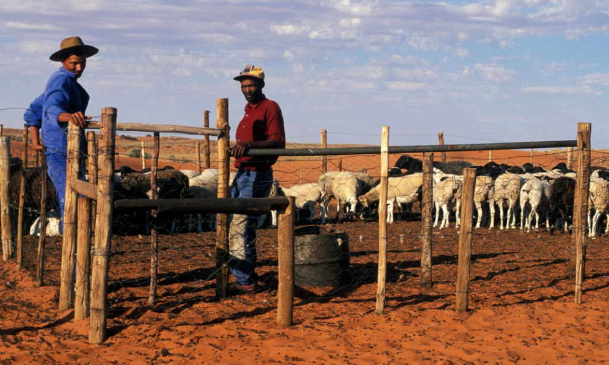

New cooling plant in Lodiani.
Farmers and locals in Lodiani to enjoy the proximity
of having a milk processing plant.
The company saw the need to have a small milk depot that can
also act as a processing plant
Good organic farming
A farmer won a prize after following advice on good dairy practices.
Her farm was on national television.
company gives grants
Our company belives in the art of giving back to the society.
We want to come up with a way to ensure the customer has all
required materials and equipment to conduct his/her daily routine
farming in arid areas
Farmers in semi-arid areas are not left out in our plan to better their futer.
We want to make sheds for their cattle ,sheep and goat to encourange them.

How to make good feed
Easier ways of mixing natural grass an hay to create a
tantalizing meal for your dairy cattle and other animals.
Grass cutting equipment
Some of the best models of cutting both grass and
hard feeds.